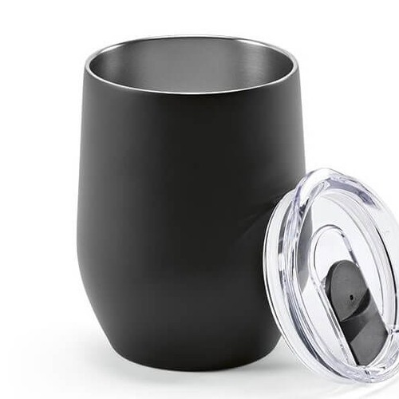

Em resumo
Ideias para acolhimento de hóspedes, visitas guiadas, programas culturais e eventos em alojamentos. As famílias apresentadas são possibilidades a avaliar, não artigos obrigatórios.
Contexto em imagens

Destinatários e necessidades
Hóspedes
Considere o que pode ser útil no contexto da estadia e se a pessoa terá de transportar o artigo durante a visita ou viagem.
Visitantes e participantes
Uma visita guiada ou programa cultural pode exigir informação legível e adequada ao percurso e à duração.
Equipas de alojamento e organização
Podem precisar de materiais para acolhimento, identificação ou coordenação de atividades.
Ocasiões, locais e épocas
Receção ou início de uma estadia
A ocasião destina-se a hóspedes e pode decorrer em contextos como balcão de receção, quarto ou ponto de acolhimento. O momento — ao longo do ano; épocas de maior procura variam por destino e alojamento — ajuda a enquadrar o objetivo de transmitir informação útil ou acolher, se uma oferta for apropriada.
Visita guiada ou programa cultural
A ocasião destina-se a visitantes e a guias e pode decorrer em contextos como ponto de encontro, percurso ou equipamento cultural. O momento — calendário e época definidos localmente — ajuda a enquadrar o objetivo de apoiar a orientação ou a participação sem presumir necessidades de transporte.
Evento num alojamento
A ocasião destina-se a hóspedes, a participantes e à organização e pode decorrer em contextos como sala, espaço de receção ou área definida pelo alojamento. O momento — datas específicas do programa e da reserva — ajuda a enquadrar o objetivo de distinguir materiais de acolhimento, participação e apoio à equipa.
Dia Mundial do Turismo
A ocasião destina-se a visitantes e a comunidade local e pode decorrer em contextos como alojamento, destino ou atividade local. O momento — 27 de setembro; a página oficial da ONU Turismo consultada é relativa à edição de 2026 Fonte — ajuda a enquadrar o objetivo de dar contexto a uma atividade local; a data não implica uma oferta nem uma iniciativa universal.
Famílias de artigos a avaliar
Hóspedes
Objetivo
Acolhimento e informação
Famílias a avaliar
Material informativo, Sacos, Artigos de
hidratação
Visitantes e participantes
Objetivo
Visita e programa cultural
Famílias a avaliar
Material de orientação, Sacos leves para
materiais, Artigos de identificação
Equipas de alojamento
Objetivo
Coordenação e acolhimento
Famílias a avaliar
Têxteis identificativos, Material de
escrita, Artigos para eventos
Utilização e distribuição
- Considere se o artigo será entregue antes da visita, durante a estadia ou no final e quem o transportará.
- Se houver visitantes com línguas diferentes, confirme traduções e revisão da informação; não assuma que um idioma serve todas as pessoas.
- A sazonalidade e os programas dependem do destino e do alojamento: verifique a agenda local em vigor antes de referir épocas ou datas.
- Defina como a equipa guardará, reporá e distribuirá os materiais no ponto de receção.
O que confirmar antes de escolher
- O artigo continua útil fora do alojamento ou durante o transporte?
- A mensagem de acolhimento é local, clara e atualizada?
- Há necessidades linguísticas ou de orientação que a equipa já identificou?
- A oferta destina-se a hóspedes, visitantes, participantes ou à equipa?
- As famílias indicadas são possibilidades editoriais; não afirmam requisitos de viagem, compatibilidade ou características dos artigos.
Perguntas frequentes
Há uma época turística igual em todos os destinos?
Não. Confirme a programação e os períodos relevantes com fontes atuais do destino e do alojamento.
O Dia Mundial do Turismo é uma recomendação para oferecer artigos?
Não. 27 de setembro pode servir de referência a uma atividade; só considere uma oferta se corresponder ao objetivo e ao contexto locais.